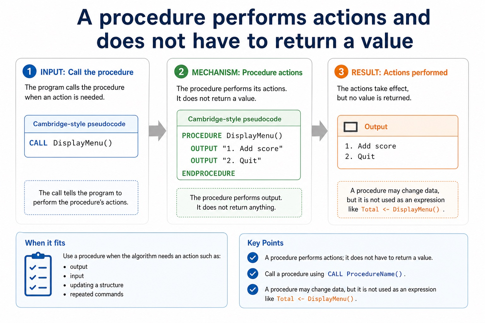
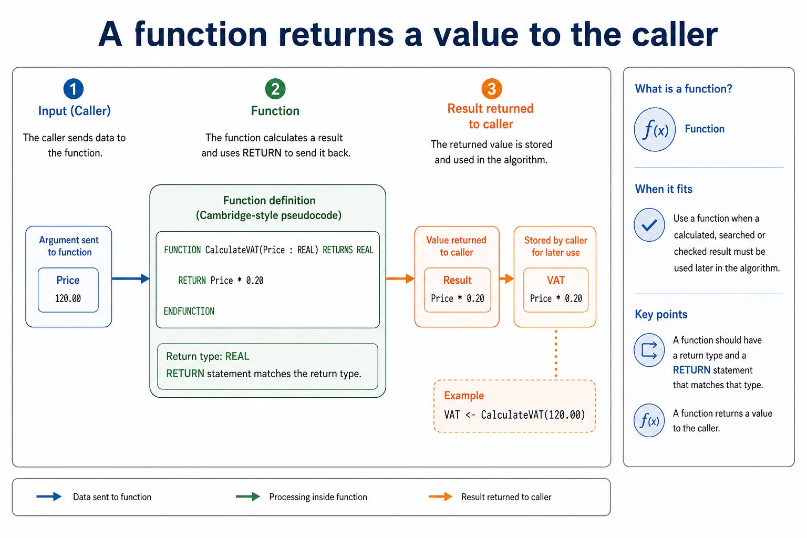
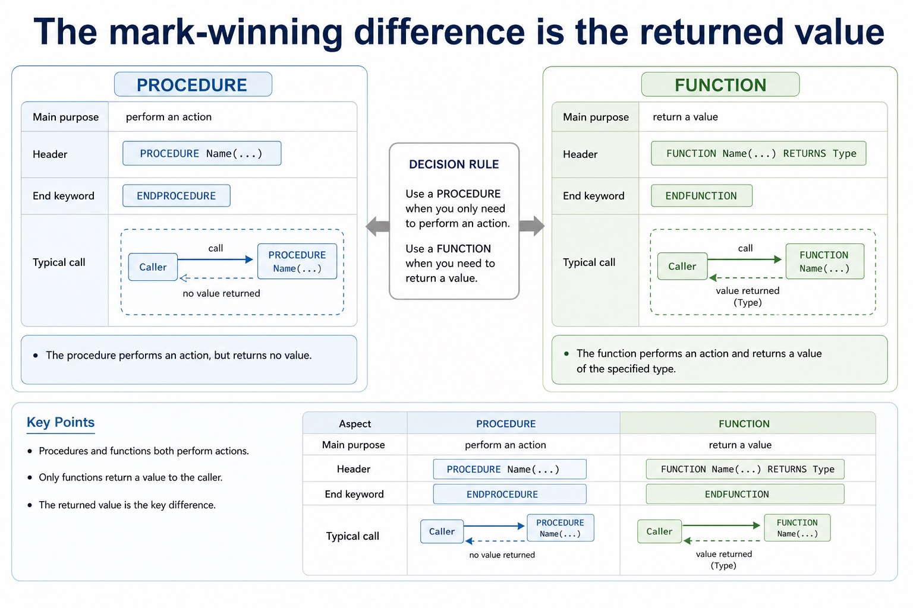
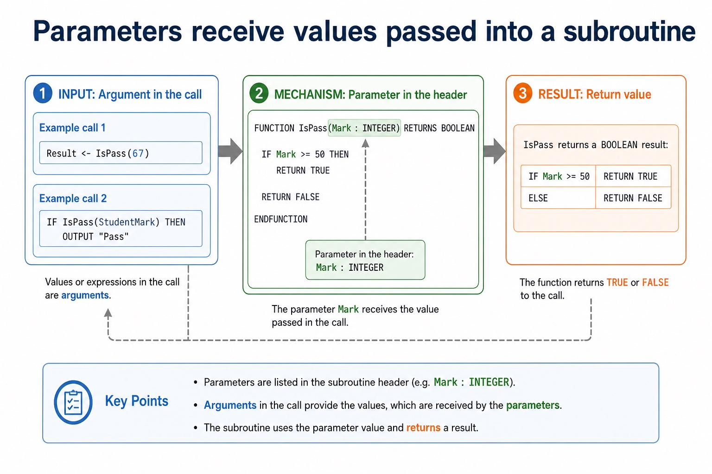
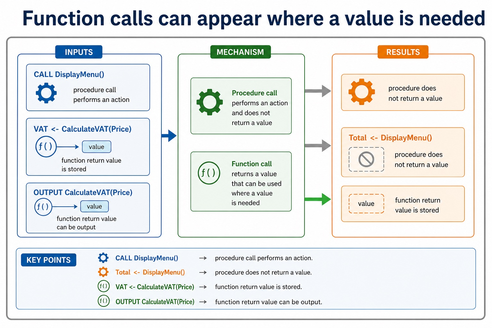
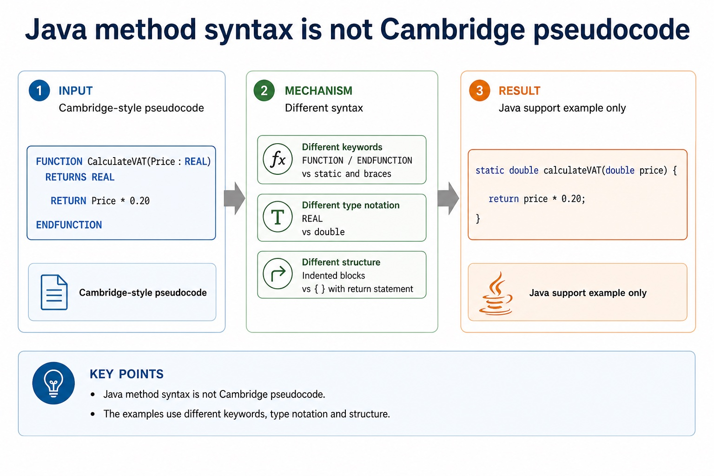
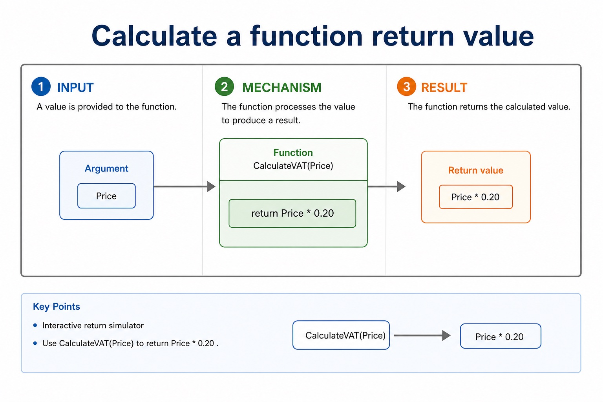

Lesson 130 | 45 minutes | Paper 2 Section 11 | 5-minute quiz
Procedures do a job. Functions do a job and bring back a value.
Subroutines make algorithms reusable and easier to test. A procedure may display a menu or update data.
A function must return a value that can be stored, output or used in an expression. If a function forgets
to return, it is less "mysterious abstraction" and more "empty shopping bag".
Define procedure, function, parameter, call and return value
Write Cambridge-style PROCEDURE and FUNCTION declarations
Choose procedure or function based on whether a value must be returned
PROCEDURE performs actions
FUNCTION RETURNS a value
Parameter input value passed in
Good subroutines reduce repeated code without hiding the algorithm's logic.
Why this matters
Paper 2 questions often ask students to complete headers, calls, parameters and return statements precisely.
Common trap
A procedure can output something, but outputting is not the same as returning a value to the caller.
Warm-up hook
Procedure or function?
The subroutine must calculate VAT and allow the main program to store the result. Choose the better option.
PROCEDURE CalculateVAT(Price)
FUNCTION CalculateVAT(Price : REAL) RETURNS REAL
PROCEDURE DisplayVAT(Price)
static void calculateVAT(double price)
Choose the subroutine that returns a value.
Procedure
A procedure performs actions and does not have to return a value
Chinese support: procedure 过程, call 调用, parameter 参数, return 返回。
Cambridge-style pseudocode
PROCEDURE DisplayMenu()
OUTPUT "1. Add score"
OUTPUT "2. Quit"
ENDPROCEDURE
CALL DisplayMenu()
When it fits
Use a procedure when the algorithm needs an action such as output, input, updating a structure or repeated commands.
A procedure may change data, but it is not used as an expression like Total <- DisplayMenu().
A procedure performs actions and does not have to return a value

A procedure performs actions and does not have to return a value: source-grounded visual explanation.
Lesson fact: ProcedureLesson fact: Cambridge-style pseudocodeLesson fact: PROCEDURE DisplayMenu()Lesson fact: OUTPUT "1. Add score"Lesson fact: OUTPUT "2. Quit"Lesson fact: ENDPROCEDURELesson fact: CALL DisplayMenu()Lesson fact: When it fitsLesson fact: Use a procedure when the algorithm needs an action such as output, input, updating a structure or repeated commands.Lesson fact: A procedure may change data, but it is not used as an expression like Total <- DisplayMenu() .
Function
A function returns a value to the caller
Cambridge-style pseudocode
FUNCTION CalculateVAT(Price : REAL) RETURNS REAL
RETURN Price * 0.20
ENDFUNCTION
VAT <- CalculateVAT(120.00)
When it fits
Use a function when a calculated, searched or checked result must be used later in the algorithm.
A function should have a return type and a RETURN statement that matches that type.
A function returns a value to the caller

A function returns a value to the caller: source-grounded visual explanation.
Lesson fact: FunctionLesson fact: Cambridge-style pseudocodeLesson fact: FUNCTION CalculateVAT(Price : REAL) RETURNS REALLesson fact: RETURN Price * 0.20Lesson fact: ENDFUNCTIONLesson fact: VAT <- CalculateVAT(120.00)Lesson fact: When it fitsLesson fact: Use a function when a calculated, searched or checked result must be used later in the algorithm.Lesson fact: A function should have a return type and a RETURN statement that matches that type.
Procedure vs function
The mark-winning difference is the returned value
Main purpose
perform an action
return a value
Header
PROCEDURE Name(...)
FUNCTION Name(...) RETURNS Type
End keyword
ENDPROCEDURE
ENDFUNCTION
Typical call
CALL DisplayMenu()
VAT <- CalculateVAT(Price)
The mark-winning difference is the returned value

The mark-winning difference is the returned value: source-grounded visual explanation.
Lesson fact: Procedure vs functionLesson fact: ProcedureLesson fact: FunctionLesson fact: Main purposeLesson fact: perform an actionLesson fact: return a valueLesson fact: PROCEDURE Name(...)Lesson fact: FUNCTION Name(...) RETURNS TypeLesson fact: End keywordLesson fact: ENDPROCEDURELesson fact: ENDFUNCTIONLesson fact: Typical call
Parameters and arguments
Parameters receive values passed into a subroutine
Parameter in the header
FUNCTION IsPass(Mark : INTEGER) RETURNS BOOLEAN
IF Mark >= 50 THEN
RETURN TRUE
ELSE
RETURN FALSE
ENDIF
ENDFUNCTION
Argument in the call
Result <- IsPass(67)
IF IsPass(StudentMark) THEN
OUTPUT "Pass"
ENDIF
Parameters receive values passed into a subroutine

Parameters receive values passed into a subroutine: source-grounded visual explanation.
Lesson fact: Parameters and argumentsLesson fact: Parameter in the headerLesson fact: FUNCTION IsPass(Mark : INTEGER) RETURNS BOOLEANLesson fact: IF Mark >= 50 THENLesson fact: RETURN TRUELesson fact: RETURN FALSELesson fact: ENDFUNCTIONLesson fact: Argument in the callLesson fact: Result <- IsPass(67)Lesson fact: IF IsPass(StudentMark) THENLesson fact: OUTPUT "Pass"
Calls and returned values
Function calls can appear where a value is needed
CALL DisplayMenu()
yes
procedure call performs an action
VAT <- CalculateVAT(Price)
yes
function return value is stored
Total <- DisplayMenu()
no
procedure does not return a value
OUTPUT CalculateVAT(Price)
yes
function return value can be output
Function calls can appear where a value is needed

Function calls can appear where a value is needed: source-grounded visual explanation.
Lesson fact: Calls and returned valuesLesson fact: CALL DisplayMenu()Lesson fact: procedure call performs an actionLesson fact: VAT <- CalculateVAT(Price)Lesson fact: function return value is storedLesson fact: Total <- DisplayMenu()Lesson fact: procedure does not return a valueLesson fact: OUTPUT CalculateVAT(Price)Lesson fact: function return value can be output
Java support only
Java method syntax is not Cambridge pseudocode
Cambridge-style pseudocode
FUNCTION CalculateVAT(Price : REAL) RETURNS REAL
RETURN Price * 0.20
ENDFUNCTION
Java support example only
static double calculateVAT(double price) {
return price * 0.20;
}
Java method syntax is not Cambridge pseudocode

Java method syntax is not Cambridge pseudocode: source-grounded visual explanation.
Lesson fact: Java support onlyLesson fact: Cambridge-style pseudocodeLesson fact: FUNCTION CalculateVAT(Price : REAL) RETURNS REALLesson fact: RETURN Price * 0.20Lesson fact: ENDFUNCTIONLesson fact: Java support example onlyLesson fact: static double calculateVAT(double price) {Lesson fact: return price * 0.20;
Interactive return simulator
Calculate a function return value
Price
Return VAT
Use CalculateVAT(Price) to return Price * 0.20.
Calculate a function return value

Calculate a function return value: source-grounded visual explanation.
Lesson fact: Interactive return simulatorLesson fact: Use CalculateVAT(Price) to return Price * 0.20 .
Subroutine chooser
Procedure or function?
Scenario
Choose
Choose a scenario to see the better subroutine type.
Worked examples
Subroutine examples with exam wording
Display menu
Calculate VAT
Boolean function
Remove repetition
Practice with instant checking
10 quick checks
Use short answers for checking. Expand the answer for fuller marking wording.
Mistake debugging
Subroutine mistakes that cost marks
Exam-style questions
Procedures, functions, calls and return values
Original Cambridge-style questions. Try first, then expand the MS.
Summary
Subroutine checklist
Procedure Does a job; call it for its actions.
Function Returns a value; use that value in the caller.
Parameters Pass values in and match the expected data types.
Homework
Subroutine practice
Procedure task Write PROCEDURE DisplayHeader() that outputs a title and two menu lines. Function task Write FUNCTION CalculateAverage(Total : REAL, Count : INTEGER) RETURNS REAL. Call task Show how the main program stores the returned average and outputs it. Debug task Correct a function that has a return type but no RETURN statement.